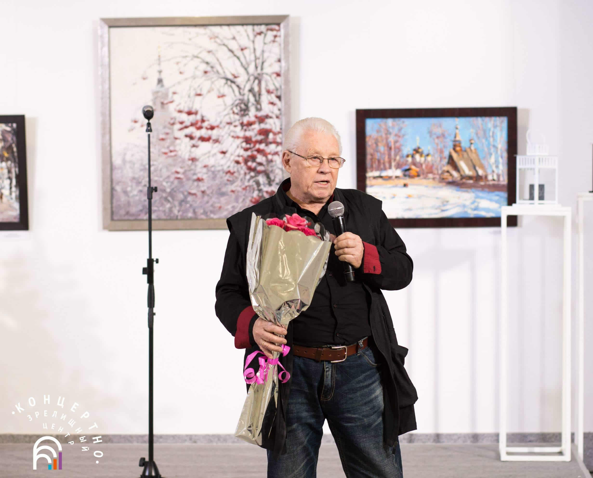
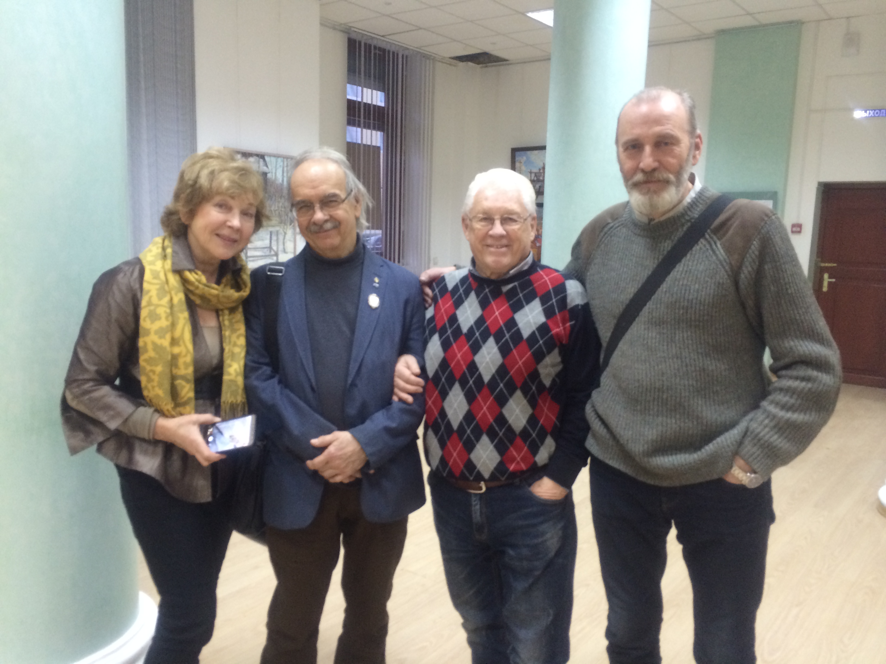

Валерий Васильевич Теплов - народный художник России, живописец
Биография:
Родился 30.03.1941 в Кишинёве. Живёт и работает в Ярославле
Достижения:
Окончил Московское высшее художественно-промышленное училище (бывшее Строгановское) в 1969 году
Член Союза художников России (1975)
Главный художник Ярославских художественно-производственных мастерских (1986-1989)
Заслуженный художник РФ (1998)
Народный художник РФ (2013)
Почётный Академик РАХ (2014)
Действительный член Петровской Академии наук и искусств (2018)
Председатель правления Ярославского областного отделения ВТОО «Союз художников России» с 1993 г. по 2000 г.
Участник ежегодных пленэров в России, Черногории, Италии, Китае
Персональные выставки прошли в Москве, Санкт-Петербурге, Пекине, Харбине, Столиве, Албе, Плёсе и т.д.
Картины художника находятся в музеях и частных коллекциях в России и за рубежом. |
|  |